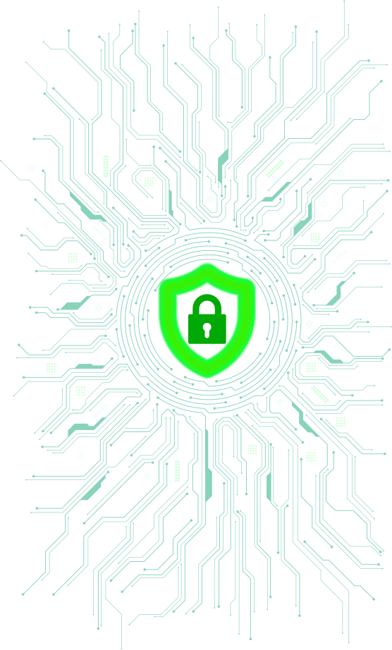
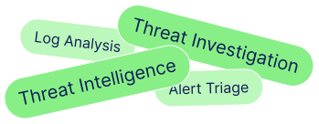

Online Programs
On-Campus Programs
Launch your cybersecurity career with our hands-on SOC Analyst Course. Master Security Operations, Threat Detection, Incident Response, SIEM, and AI-powered security workflows through real-world investigations and become job-ready for modern Security Operations Center (SOC) roles.

Practical SOC Analyst Course that builds real cybersecurity skills through hands-on labs and real-world investigations.
A fully practical SOC analyst course curriculum where you investigate alerts, analyze logs, and respond to incidents instead of just learning cybersecurity theory.

Learn directly from mentors with real-world experience in Security Operations, Threat Detection, Incident Response, and Cybersecurity Operations.

Get hands-on exposure to the tools used by SOC teams for monitoring, investigation, threat intelligence, log analysis, incident response, and AI-assisted security operations.

Investigate phishing attacks, malware infections, brute-force attacks, and insider threats through practical exercises.

Analyze phishing attacks, malware incidents, brute force attacks, and insider threat scenarios inspired by real cybersecurity investigations.

Build a portfolio of investigation reports, threat analysis exercises, incident response documentation, and your final capstone project.
Build a portfolio of investigation reports, threat analysis exercises, incident response documentation, and your final capstone project.


Resume upgrades, portfolio reviews, mock interviews & personalized guidance to help you switch roles or move ahead.
Work on a complete end-to-end SOC investigation involving threat detection, IOC analysis, incident response, and security reporting.

A detailed overview of our online SOC Analyst course, including all topics, case studies, projects, and more.
Milestone
Duration
Mode
Live Sessions
Project
Milestone
Duration
Mode
Live Sessions
Project

A company has reported suspicious activity on their network. As a junior SOC analyst you h...

Your SOC team has received a complaint that a user account may have been compromised. You ...

A company has reported suspicious activity on their network. As a junior SOC analyst you h...
Limited seats available - Reserve your spot today
 Filling Fast17 seats left
Filling Fast17 seats left
 Filling Fast17 seats left
Filling Fast17 seats left
Build Real SOC Skills Through Our SOC Analyst Course.

Tools for Implementation:
Our SOC Analyst course equips you with the tools used by Security Operations Centers (SOCs) to monitor, investigate, and respond to cyber threats.
Complete our SOC analyst course and earn an industry-recognized certification that showcases your cybersecurity expertise.

Complete our SOC analyst course and earn an industry-recognized certification that showcases your cybersecurity expertise.
Your final sprint to becoming a job-ready SOC Analyst
ATS-friendly cybersecurity resume.
Showcase projects & investigations.
Build a recruiter-ready profile.
Practice with real SOC interview scenarios.
Gear Up
Build your professional profile and cybersecurity identity.
Pitch Perfect
Crack HR interviews with confidence.
Tech Skill Setup
Master the technical side of SOC hiring.
Learn directly from the experts & industry stalwarts.

Founder

Cyber Security Professional

Cyber Security Mentor

Cyber Security Mentor

Founder

Cyber Security Professional

Cyber Security Mentor

Cyber Security Mentor
See how our SOC Analyst Course is transforming cybersecurity careers.


🚀 Successfully Completed My VAPT Final Project | Score: 89/100
I’m excited to share the successful completion of my Final Project on Vulnerability Assessment & Exploitation of Metasploitable 2, which received a score of 89/100 after review.
🔍 Project Highlights:
• Network Reconnaissance & Host Discovery
• Service Enumeration & Vulnerability Assessment
• SMB and FTP Security Analysis
• Exploitation of Critical Vulnerabilities
• Post-Exploitation Activities
• Risk Assessment & Remediation Planning
• Professional Security Reporting
🛠 Technologies & Tools:
• Kali Linux
• Nmap
• Metasploit Framework
• enum4linux
• Nikto
• VMware Workstation / VirtualBox
📈 Key Learning Outcomes:
• Practical penetration testing methodology
• Vulnerability identification and validation
• Exploitation techniques in a controlled lab environment
• Security documentation and reporting
• Risk-based remediation strategies
This project strengthened my hands-on understanding of ethical hacking, vulnerability assessment, and penetration testing workflows.
I would like to express my sincere gratitude to Pavli Sharma for her valuable mentorship, guidance, and continuous support throughout this project. Special thanks to WsCube Tech for providing an excellent learning platform and practical exposure.
⚠️ All activities were performed in a controlled educational lab environment for learning purposes only.
📂GitHub Repository:
#CyberSecurity #EthicalHacking #VAPT #PenetrationTesting #KaliLinux #Metasploit #Nmap #InformationSecurity #CyberSecurityStudent #NetworkSecurity #LearningJourney #WsCubeTech #GitHub
🎉 Excited to share that I have successfully completed the Ethical Hacking Bootcamp from WsCube Tech , WsCube Tech Jodhpur.
Over the past 2 months, I gained hands-on exposure to various cybersecurity concepts and practical labs, including:
🔹 Networking Fundamentals
🔹 Linux Basics
🔹 Reconnaissance & Information Gathering
🔹 Network Scanning (Nmap)
🔹 System Hacking Concepts
🔹 Intrusion Techniques
🔹 Cryptography Basics
🔹 Vulnerability Assessment
🔹 Cybersecurity Fundamentals
This bootcamp strengthened my understanding of ethical hacking and gave me valuable practical experience through hands-on learning.
I'm now continuing my journey in:
✅ Penetration Testing
✅ Web Application Security
✅ Python for Security
✅ TryHackMe Labs
A special thanks to Pavli Sharma and the entire team at WsCube Tech for their valuable guidance, mentorship, and continuous support throughout this program.
🚀 Looking forward to learning, building projects, and growing in the cybersecurity field.
Feel free to connect if you're also interested in Cybersecurity or Ethical Hacking.
#CyberSecurity #EthicalHacking #PenetrationTesting #Linux #Networking #TryHackMe #LearningJourney #WsCubeTech
I’m happy to share that I’ve successfully completed a 2-month cybersecurity course with WsCube Tech , led by Ankur Joshi Sir. This course gave me hands-on experience and practical knowledge, helping me understand cybersecurity better.
A big thank you to Ankur Joshi Sir and the WsCube Tech team for their guidance and support. I’m excited to apply what I’ve learned and continue growing in this field.
#CyberSecurity #WsCubeTech #CyberSecurityTraining #Hacking #CyberThreats #Networking
𝗕𝗼𝗹𝗱 𝗠𝗶𝗹𝗲𝘀𝘁𝗼𝗻𝗲 𝗨𝗻𝗹𝗼𝗰𝗸𝗲𝗱: 𝟮 𝗠𝗼𝗻𝘁𝗵𝘀 𝗼𝗳 𝗜𝗻𝘁𝗲𝗻𝘀𝗶𝘃𝗲 𝗘𝘁𝗵𝗶𝗰𝗮𝗹 𝗛𝗮𝗰𝗸𝗶𝗻𝗴!
I am thrilled to share that I have officially completed my 𝟮-𝗠𝗼𝗻𝘁𝗵 𝗘𝘁𝗵𝗶𝗰𝗮𝗹 𝗛𝗮𝗰𝗸𝗶𝗻𝗴 𝗕𝗼𝗼𝘁𝗰𝗮𝗺𝗽 with WsCube Tech!
Over the past two months, I have deeply immersed myself in the world of cybersecurity, shifting my mindset to understand modern threat landscapes from an offensive perspective. 𝘛𝘩𝘪𝘴 𝘪𝘯𝘵𝘦𝘯𝘴𝘪𝘷𝘦 𝘫𝘰𝘶𝘳𝘯𝘦𝘺 𝘩𝘢𝘴 𝘦𝘲𝘶𝘪𝘱𝘱𝘦𝘥 𝘮𝘦 𝘸𝘪𝘵𝘩 𝘪𝘯𝘷𝘢𝘭𝘶𝘢𝘣𝘭𝘦 𝘩𝘢𝘯𝘥𝘴-𝘰𝘯 𝘦𝘹𝘱𝘦𝘳𝘪𝘦𝘯𝘤𝘦 𝘢𝘯𝘥 𝘴𝘰𝘭𝘪𝘥 𝘵𝘦𝘤𝘩𝘯𝘪𝘤𝘢𝘭 𝘴𝘬𝘪𝘭𝘭𝘴.
📈 𝗞𝗲𝘆 𝗦𝗸𝗶𝗹𝗹𝘀 & 𝗖𝗼𝗻𝗰𝗲𝗽𝘁𝘀 𝗠𝗮𝘀𝘁𝗲𝗿𝗲𝗱:
1.𝗖𝗼𝗿𝗲 𝗠𝗲𝘁𝗵𝗼𝗱𝗼𝗹𝗼𝗴𝗶𝗲𝘀: Mastering the 𝟱 𝗣𝗵𝗮𝘀𝗲𝘀 𝗼𝗳 𝗛𝗮𝗰𝗸𝗶𝗻𝗴 (Reconnaissance, Scanning, Gaining Access, Maintaining Access, and Clearing Tracks).
2.𝗩𝘂𝗹𝗻𝗲𝗿𝗮𝗯𝗶𝗹𝗶𝘁𝘆 𝗔𝘀𝘀𝗲𝘀𝘀𝗺𝗲𝗻𝘁 & 𝗣𝗲𝗻𝗲𝘁𝗿𝗮𝘁𝗶𝗼𝗻 𝗧𝗲𝘀𝘁𝗶𝗻𝗴 (𝗩𝗔𝗣𝗧): Identifying, analyzing, and safely exploiting system vulnerabilities.
3.𝗡𝗲𝘁𝘄𝗼𝗿𝗸 & 𝗪𝗶𝗿𝗲𝗹𝗲𝘀𝘀 𝗦𝗲𝗰𝘂𝗿𝗶𝘁𝘆: Advanced networking fundamentals, 𝗪𝗶-𝗙𝗶 𝗵𝗮𝗰𝗸𝗶𝗻𝗴, and executing
4.𝗠𝗮𝗻-𝗶𝗻-𝘁𝗵𝗲-𝗠𝗶𝗱𝗱𝗹𝗲 (𝗠𝗜𝗧𝗠) attacks.
𝗜𝗻𝗳𝗼𝗿𝗺𝗮𝘁𝗶𝗼𝗻 𝗚𝗮𝘁𝗵𝗲𝗿𝗶𝗻𝗴: Leveraging 𝗢𝗦𝗜𝗡𝗧 and advanced 𝗚𝗼𝗼𝗴𝗹𝗲 𝗗𝗼𝗿𝗸𝗶𝗻𝗴 techniques for precise reconnaissance.
5.𝗘𝗫𝗽𝗹𝗼𝗶𝘁𝗮𝘁𝗶𝗼𝗻 & 𝗣𝗼𝘀𝘁-𝗘𝘅𝗽𝗹𝗼𝗶𝘁𝗮𝘁𝗶𝗼𝗻: Creating custom payloads, executing exploits, and maintaining post-exploitation access.
6.𝗖𝗿𝘆𝗽𝘁𝗼𝗴𝗿𝗮𝗽𝗵𝘆 & 𝗛𝗮𝘀𝗵𝗶𝗻𝗴: Understanding data encryption, hashing algorithms, and securing data integrity.
7.𝗥𝗲𝗮𝗹-𝗪𝗼𝗿𝗹𝗱 𝗔𝗽𝗽𝗹𝗶𝗰𝗮𝘁𝗶𝗼𝗻: Analyzing real-world case studies and successfully completing hands-on capstone projects.
🙏 𝗔 𝗦𝗽𝗲𝗰𝗶𝗮𝗹 𝗧𝗵𝗮𝗻𝗸 𝗬𝗼𝘂
A huge shoutout and heartfelt thanks to Pavli 𝗠𝗮𝗺 and the dedicated team at WsCube Tech! 𝘠𝘰𝘶𝘳 𝘨𝘶𝘪𝘥𝘢𝘯𝘤𝘦, 𝘥𝘦𝘦𝘱 𝘵𝘦𝘤𝘩𝘯𝘪𝘤𝘢𝘭 𝘪𝘯𝘴𝘪𝘨𝘩𝘵𝘴, 𝘢𝘯𝘥 𝘴𝘵𝘳𝘶𝘤𝘵𝘶𝘳𝘦𝘥 𝘮𝘦𝘯𝘵𝘰𝘳𝘴𝘩𝘪𝘱 𝘮𝘢𝘥𝘦 𝘵𝘩𝘪𝘴 𝘪𝘯𝘵𝘦𝘯𝘴𝘪𝘷𝘦 𝘭𝘦𝘢𝘳𝘯𝘪𝘯𝘨 𝘦𝘹𝘱𝘦𝘳𝘪𝘦𝘯𝘤𝘦 𝘪𝘯𝘤𝘳𝘦𝘥𝘪𝘣𝘭𝘺 𝘳𝘦𝘸𝘢𝘳𝘥𝘪𝘯𝘨.
𝘛𝘩𝘦 𝘭𝘦𝘢𝘳𝘯𝘪𝘯𝘨 𝘯𝘦𝘷𝘦𝘳 𝘴𝘵𝘰𝘱𝘴. Ready to take these skills to the next level and keep securing the digital world!
#EthicalHacking #PenetrationTesting #VAPT #OSINT #InfoSec #ContinuousLearning #WsCubeTech
🚀 Successfully Completed My VAPT Final Project | Score: 89/100
I’m excited to share the successful completion of my Final Project on Vulnerability Assessment & Exploitation of Metasploitable 2, which received a score of 89/100 after review.
🔍 Project Highlights:
• Network Reconnaissance & Host Discovery
• Service Enumeration & Vulnerability Assessment
• SMB and FTP Security Analysis
• Exploitation of Critical Vulnerabilities
• Post-Exploitation Activities
• Risk Assessment & Remediation Planning
• Professional Security Reporting
🛠 Technologies & Tools:
• Kali Linux
• Nmap
• Metasploit Framework
• enum4linux
• Nikto
• VMware Workstation / VirtualBox
📈 Key Learning Outcomes:
• Practical penetration testing methodology
• Vulnerability identification and validation
• Exploitation techniques in a controlled lab environment
• Security documentation and reporting
• Risk-based remediation strategies
This project strengthened my hands-on understanding of ethical hacking, vulnerability assessment, and penetration testing workflows.
I would like to express my sincere gratitude to Pavli Sharma for her valuable mentorship, guidance, and continuous support throughout this project. Special thanks to WsCube Tech for providing an excellent learning platform and practical exposure.
⚠️ All activities were performed in a controlled educational lab environment for learning purposes only.
📂GitHub Repository:
#CyberSecurity #EthicalHacking #VAPT #PenetrationTesting #KaliLinux #Metasploit #Nmap #InformationSecurity #CyberSecurityStudent #NetworkSecurity #LearningJourney #WsCubeTech #GitHub
🎉 Excited to share that I have successfully completed the Ethical Hacking Bootcamp from WsCube Tech , WsCube Tech Jodhpur.
Over the past 2 months, I gained hands-on exposure to various cybersecurity concepts and practical labs, including:
🔹 Networking Fundamentals
🔹 Linux Basics
🔹 Reconnaissance & Information Gathering
🔹 Network Scanning (Nmap)
🔹 System Hacking Concepts
🔹 Intrusion Techniques
🔹 Cryptography Basics
🔹 Vulnerability Assessment
🔹 Cybersecurity Fundamentals
This bootcamp strengthened my understanding of ethical hacking and gave me valuable practical experience through hands-on learning.
I'm now continuing my journey in:
✅ Penetration Testing
✅ Web Application Security
✅ Python for Security
✅ TryHackMe Labs
A special thanks to Pavli Sharma and the entire team at WsCube Tech for their valuable guidance, mentorship, and continuous support throughout this program.
🚀 Looking forward to learning, building projects, and growing in the cybersecurity field.
Feel free to connect if you're also interested in Cybersecurity or Ethical Hacking.
#CyberSecurity #EthicalHacking #PenetrationTesting #Linux #Networking #TryHackMe #LearningJourney #WsCubeTech
Master Threat Detection, Incident Response & Security
₹14,999/-Inclusive of all taxes
in Just 6 Weeks?
Join 20,000+ Successful Learners
Get your every question answered here.
This SOC Analyst Course is ideal for students, graduates, IT professionals, network administrators, career switchers, and anyone looking to start a career in Cybersecurity or Security Operations.
No. Our SOC Analyst Course Online starts with cybersecurity, networking, and SOC fundamentals before progressing to advanced investigations and incident response.
Our SOC Analyst Course covers Security Operations (SOC), SIEM, Log Analysis, Threat Detection, Alert Triage, Incident Response, Threat Intelligence, IOC Analysis, and AI-powered security workflows.
Our SOC Analyst Course Online is delivered through live online sessions led by cybersecurity mentors, along with hands-on labs, assignments, and project work.
Yes. Learners enrolled in our SOC Analyst Course receive resume reviews, LinkedIn optimization, interview preparation, and placement assistance.
Looking to build a career in cybersecurity without spending years earning specialized certifications? A SOC Analyst course can be the perfect starting point. As cyberattacks continue to rise across industries, organizations are actively looking for professionals who can monitor security events, investigate threats, and respond to incidents before they cause serious damage.
However, many beginners struggle to enter cybersecurity because most courses focus heavily on theory and certifications, with very little practical exposure. As a result, learners often understand concepts but lack the confidence to work in a real Security Operations Center (SOC).
That's where the WsCube Tech Certified SOC Analyst Program makes a difference.
Designed with a practical-first approach, this program helps you build real-world SOC skills through hands-on labs, live investigations, SIEM platforms, threat intelligence tools, and AI-powered security workflows. Instead of simply learning cybersecurity concepts, you'll investigate phishing attacks, analyze logs, respond to security incidents, and work with the same tools used by professional SOC teams.
Whether you're a student, IT professional, career switcher, or cybersecurity enthusiast, this SOC Analyst course equips you with the practical skills needed to launch your career in one of the fastest-growing domains in technology.